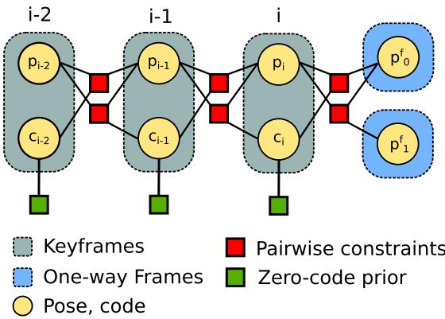

最后这一点值得多说一句。原文说，用标准框架带来的好处是「straightforward probabilistic integration of different sensor modalities which was not possible with the previous formulations of dense SLAM」——从此稠密 SLAM 也能像稀疏 SLAM 一样，方便地把 IMU、GNSS 等新传感器作为新的因子加进图里。这不是一个实现细节，而是一个架构上的解锁：稠密 SLAM 从此有了和稀疏 SLAM 同等规格的后端。
另外原文还顺手澄清了它与另外两篇的关系，这对我们把第三季串成线很有用：
vs CNN-SLAM（0054）
「an example of other directly comparable work」，原文把 CNN-SLAM 选为主要的定量对比基线，因为它也是「whole estimated trajectory、不用真值位姿」来评测重建的少数系统
原文强调自己的方法「relies less on the network generalisation」，理由是后续优化能修正网络的坏预测——「in our system, neural networks are mainly used for obtaining an image conditioned manifold to optimise over」。
原文从这张表里读出的结论很干净：加上任一种因子都能降低轨迹误差、提升重建精度；其中重投影因子对「轨迹」影响更强，几何因子对「重建」影响更强；三个一起用效果最好。至于机制，原文给了两句解释：重投影项因为显式地做了特征匹配，所以「improves local minima avoidance and increases convergence rate」；而几何项则引入了「世界上只有一张表面」这个先验，把各帧独立的深度图在缺乏光度信息的无纹理区域「钉」成一份重建。
3. 一个小装置：one-way frames（单向帧）
这是我认为本节最「巧」的一个设计，值得单独讲。
问题出在「只用相邻关键帧」这个设定上。光度误差要发挥作用，最好同时有小基线和大基线的配对——小基线好对齐、大基线给深度信息。但如果只把当前关键帧与「最后 N 个关键帧」相连，这个条件不一定满足。
原文的解法是引入一类特殊的帧：它们不携带深度、不被优化，只负责把信息喂给最新的关键帧。原文的定义是「one-way frames that do not have attached depth and are used to feed information to refine the latest keyframe」。等优化若干步之后，这些帧就被边缘化掉、从图里删除。

原图注（Fig. 6）：An example instance of the factor graph used in our system containing three keyframes and two one-way frames attached to the latest keyframe. Multiple different pairwise constraints can be used simultaneously (photometric, geometric or reprojection) but for simplicity, only a single type has been presented in this figure.（本系统所用因子图的一个实例：包含三个关键帧，以及挂在最新关键帧上的两个单向帧。多种成对约束（光度、几何、重投影）可以同时使用，但为简洁起见，图中只画了其中一种。） 怎么看这张图：先认出两类节点——带 code 的是关键帧（会被优化），不带深度的是单向帧（只喂信息）。再看边的方向：单向帧只连到最新那个关键帧，所以它们的信息只往一个方向流。最后留意原文图注的提醒：实际系统里同一对节点之间可以同时挂多种因子，图中只画了一种。它的一个工程后果在 5.2 节：为了让单向帧能被边缘化掉，原文特意强制了一个消元顺序，让它们在 iSAM2 的 Bayes 树里成为叶子节点——这样做边缘化时就不会牵连其他变量。 要记住的一句话：单向帧是「用完即弃的信息搬运工」——它不进入地图，只把观测灌进最新关键帧，然后自己消失。
这张图在画什么：上半是因子图的局部：蓝色圆圈是关键帧（带 code、会被长期保留），橙色方块是单向帧（不带深度）。橙色箭头是单向的——只从单向帧指向最新关键帧，反向不成立。下半是一条时间轴：某个时刻加入两个单向帧，优化若干步后它们被边缘化、移出图。 怎么看这张图：① 关键在箭头的方向性：单向帧在数学上只贡献约束、不接受修正，因此它的「存在感」是单向的；② 它们最终消失这件事很重要——这说明它们是临时通道，不占地图容量；③ 原文为此付出的代价是「强制消元顺序」，这是一个纯工程细节，但它说明了实现一个 SLAM 系统时，「谁先被消掉」这种顺序问题都可能需要专门处理。 要记住的一句话：单向帧让系统既能吸收大量观测、又不让因子图无限长大——这是一个「用完即弃」的工程智慧。
这张图在画什么：一副天平，左盘是 CodeSLAM 的 128 维 code（原文说精度在 128 处饱和，再大收益极少），右盘是 DeepFactors 的 32 维。看起来是右边「吃亏」，但天平在这里只是一种修辞——真正想说的是这不是「哪个更好」的比较，而是「目标函数不同」。 怎么看这张图：① 先看清两边的原文依据：CodeSLAM 说 128 处饱和（在重建精度这个目标下最优）；DeepFactors 说 32 是「the maximum code size that we can achieve real-time results with」（在实时性这个约束下取上限）；② 所以这不是两个人算错了，而是加入实时约束之后，最优解移到了别处；③ 代价也确实存在，见 5.3 节——原文自己报告在「平坦纹理墙」场景上输给了 CNN-SLAM，并把它归因于 32 维撑不住完全平坦的深度。 要记住的一句话：研究里最常见的进步不是「我的方法更好」，而是「我换了约束条件，于是最优点挪了位」。
上图的右边那半个结论，原文有明确的依据：「code size 32 …… This is the maximum code size that we can achieve real-time results with in our SLAM system.」——注意这句话的措辞：不是「32 够用」，而是「32 是实时的上限」。这是一个非常诚实、也非常工程化的表述。
原文把批 MAP 问题的求解交给 iSAM2：它「stores a factorisation of the batch Jacobian in the form of a Bayes Tree」，新增变量时只对受影响的因子重新线性化与重分解，因此能在探索型运动下做到近常数时间更新
④ GPU / CPU 分工 + 跟踪与建图交替
稠密 warp、优化、跟踪交给 GPU（CUDA）；重投影与稀疏几何因子在 CPU 上算；同时让跟踪与建图步骤交替执行，以跟上不断到来的图像
5.2 一个必须讲清的数字：340 ms 里只有 16 ms 是网络
这是本节我最想让你记住的一个数字，因为它打破了一个常见直觉——「用了神经网络所以慢」。
原文在性能一节给出：每初始化一个新关键帧，需要约 340 ms，其中只有 16 ms 花在网络前向传播上，其余全部花在用 tf.gradients 计算雅可比上。原文对这个现象的解释很坦诚：这是「backward-mode auto-differentiation based implementation」的低效所致——那套实现是为「标量函数的梯度」优化的（机器学习的常见需求），而这里需要的是「每个输出像素对潜在表示（code）的导数」，于是不得不在网络上跑大量遍。
原文的预测：这个 340 ms 里有巨大的优化空间
原文明确写下：「This time can be drastically reduced with engineering effort and we predict it should be possible to reduce the overall time required to run the network to around 30 ms.」
请注意这个比例：340 ms → 预计 30 ms，是把「网络相关的开销」压掉约 90%。这条说明了一个在深度学习 + 机器人里反复出现的教训：真正的瓶颈往往不在模型本身，而在你「向模型要梯度」的方式。这个坑，任何把网络嵌进优化器的人都会遇到。
跟踪速度则是另一回事：原文报告当前帧与最新关键帧的跟踪约 250 Hz——因为跟踪只做 SE(3) 的全图 Lucas-Kanade（原文用的就是这个名字：standard direct whole-image SE3 Lucas-Kanade），不涉及网络。
相机快速移动时，只开光度 + 重投影因子，先把速度保住。原文原话：通常是「we typically limit our system to only use the photometric and reprojection error to allow it to keep up with the fast camera movement」
原图注（Fig. 4）：Network architecture. The bottom path is a U-Net depth auto-encoder without skip connections that learns the optimisable compact code c. Its encoder and decoder are conditioned on image features concatenated from the Feature Network. The top part of the network learns to predict optimal code $c_{pred}$ from the input RGB image that is decoded into a mono depth prediction. The depth decoder is shared between the two networks (light blue).（网络结构。下方路径是一个不带跳连的 U-Net 深度自编码器，用来学习可优化的紧凑 code c；它的编码器与解码器都被来自特征网络的图像特征（通过拼接）条件化。上方部分学习从输入 RGB 图像预测最优 code $c_{pred}$，再解码为单目深度预测。深度解码器在两个网络之间共享（浅蓝色）。） 怎么看这张图：与上一节 CodeSLAM 的 Fig. 3 对照着看最有效。三个关键差异：① 自编码器不带跳连；② 多了一条「顶部」的显式 code 预测路径（对应初始化方式的改进）；③ 深度解码器被两条路径共享——也就是说，「预测的 code」和「优化的 code」走的是同一个解码器，这保证了两者落在同一个空间里。 要记住的一句话：上一节是「一个网络学一个表示」，这一节是「一个表示、两个入口」——一个给初值，一个给优化。
icl/office0 30.17 vs 19.41 ／ icl/living0 20.44 vs 12.84 ／ icl/living1 20.86 vs 13.04 ／ tum/seq1 29.33 vs 12.48 ／ tum/seq3 51.85 vs 27.40
本文输掉的序列（诚实必读）
icl/office1 20.16 vs 29.15 ／ tum/seq2 16.92 vs 24.08。原文给的解释是：后者相机看到的是一面平坦的纹理墙，而「due to the small code size (32) used in our system we are typically not able to represent fully flat depth easily」
另外原文明确交代了评测口径：因为系统是单目的、不产生「到真实尺度」的轨迹与重建，它用 TUM benchmark 脚本算出的最优尺度对轨迹与深度同时缩放（和 [11] 等工作的做法一致）。这一点必须说，否则「绝对轨迹误差」这个词会误导——它是缩放后的结果。
6.3 轨迹精度（Table III）
ATE RMSE（米，越小越好），对比对象是 CNN-SLAM、DeepTAM（带 `*` 标记＝非实时性能）、CodeSLAM（带 `*`）：
Table III 的说明里写着：CNN-SLAM 是在「关闭位姿图优化」的情况下跑的，而本文是在「关闭回环」的情况下跑的；另外「in order to limit computation we have disabled the geometric factor for the evaluation」（为限制计算量，评测时关闭了几何因子）。原文还说明 room 与 plant 两个序列被剔除了，因为它们含大量丢帧、可能歪曲结果。
原图注（Fig. 7）：Example reconstructions on selected scenes from the validation set of the ScanNet dataset. The specular lighting in the 3D visualisation has been exaggerated to better highlight structure. Best viewed on a computer screen.（在 ScanNet 数据集验证集上选定场景的重建示例。三维可视化中的高光反射被夸大了，以更好地突出结构。建议在电脑屏幕上查看。） 怎么看这张图：这是「表示能用」的直观证据。请注意原文的一个小细节：高光是被"夸大"过的——目的是让你更容易看出表面结构（否则在默认光照下，几何的细节不容易分辨）。这在可视化论文里是很常见的诚实说明，读的时候别把它当真实渲染效果。 要记住的一句话：稠密几何的价值就在于它「看起来像东西」——这正是稀疏特征地图做不到、而 AR / 机器人交互需要的。
6.4 该讲清的代价
平坦纹理墙表达不了
这是最硬的一条局限，而且原文自己指名道姓地报告了：tum/seq2 输给 CNN-SLAM，原因是 32 维 code「typically not able to represent fully flat depth easily」。「更大的 code 更能表达」与「更小的 code 更能实时」在这里正面撞上了。
原文的解释是：重投影项因为显式地用到了特征匹配（BRISK），所以能「improve local minima avoidance and increases convergence rate」，从而给系统增加鲁棒性；而几何项引入的是「世界上只观测到一张表面」这个先验，它把各帧独立的深度图「pins together to form a single reconstruction」，特别在缺乏光度信息的无纹理区域起关键作用。三个一起用效果最好。
说明两件事：第一，把网络嵌入优化器时，真正的瓶颈常常不是模型推理，而是「向模型要梯度」的方式；第二，一个「看起来很慢」的深度学习系统，可能只是实现没调好——340 ms 里 95% 是可以优化掉的开销（当然这仍是作者的预测，不是已实现的结果）。
为什么 deep factors 要把 code 从 128 降到 32？这是「退步」吗？代价体现在哪里？
展开查看答案
不是退步，而是目标函数变了。CodeSLAM 报告 128 处精度饱和，那是在「以重建精度为主要目标」下的最优；DeepFactors 引入实时约束后，原文明确说 32 是「the maximum code size that we can achieve real-time results with」——是实时上限，不是精度最优。
原文说这带来了「straightforward probabilistic integration of different sensor modalities which was not possible with the previous formulations of dense SLAM」。
含义是：过去的稠密 SLAM 为了速度，通常自己做一套简化的、位姿与地图交替优化的流程，很难把新传感器（IMU、GNSS 等）作为标准因子加进去。改用标准因子图后，稠密 SLAM 的后端规格就与稀疏 SLAM 对齐了——只要把新观测写成一个因子挂上去即可。这也是原文自我定位里「a unified SLAM framework」的一部分：让稠密/稀疏、学习/模型这两对曾经对立的路线，在同一套概率框架里共存。